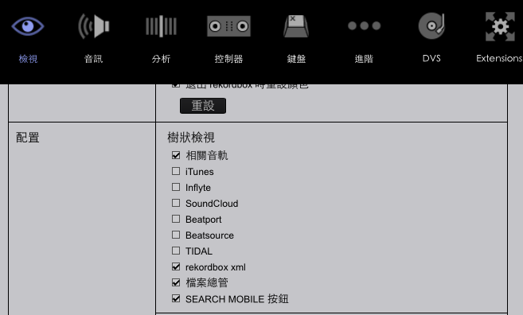
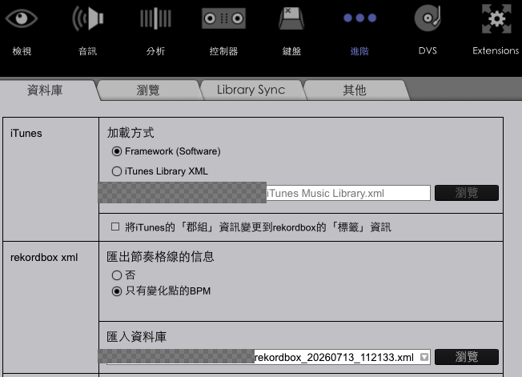
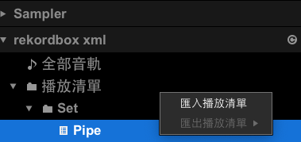

_Serato_ 資料夾,以防萬一(例如硬碟異常、誤刪等與本工具無關的意外)。
_Serato_ 資料夾或單一 .crate 檔案拖到這裡,或
.crate 檔案在哪裡?點這裡看說明路徑通常是:
裡面每一個 .crate 檔案就是一個 Serato 播放列表(crate),檔名就是列表名稱。可以整個 _Serato_ 資料夾一起拖進上面,或是只挑幾個 .crate 檔案上傳。
路徑通常是:
同樣地,每個 .crate 檔案就是一個播放列表。如果列表名稱裡有用資料夾分類(子清單),檔名會用 %% 分隔,例如 Techno%%Hard.crate 代表「Techno」資料夾底下的「Hard」子清單,不影響直接選取使用。
",記得刪掉.xml 檔案(通常在「下載項目」資料夾裡),選完關掉喜好設定視窗步驟②:喜好設定 → 檢視 → 配置,確認「rekordbox xml」已勾選

步驟③④⑤:喜好設定 → 進階 → 資料庫,選好 XML 檔案再按瀏覽

步驟⑥⑦:左側會出現「rekordbox xml」,在播放列表上按右鍵選「匯入播放清單」
